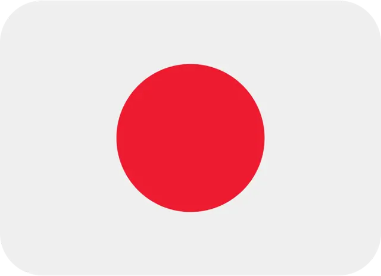
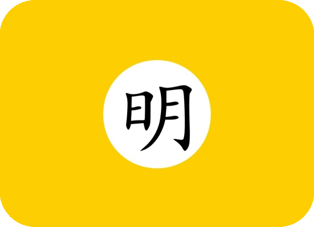
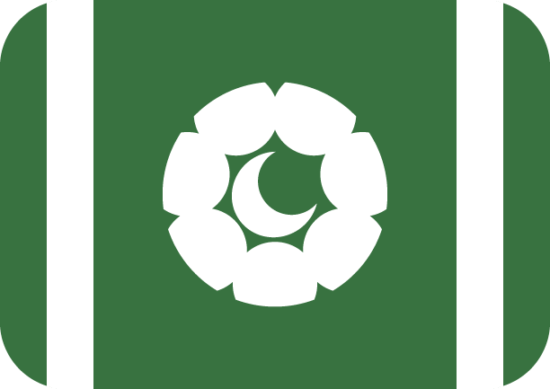
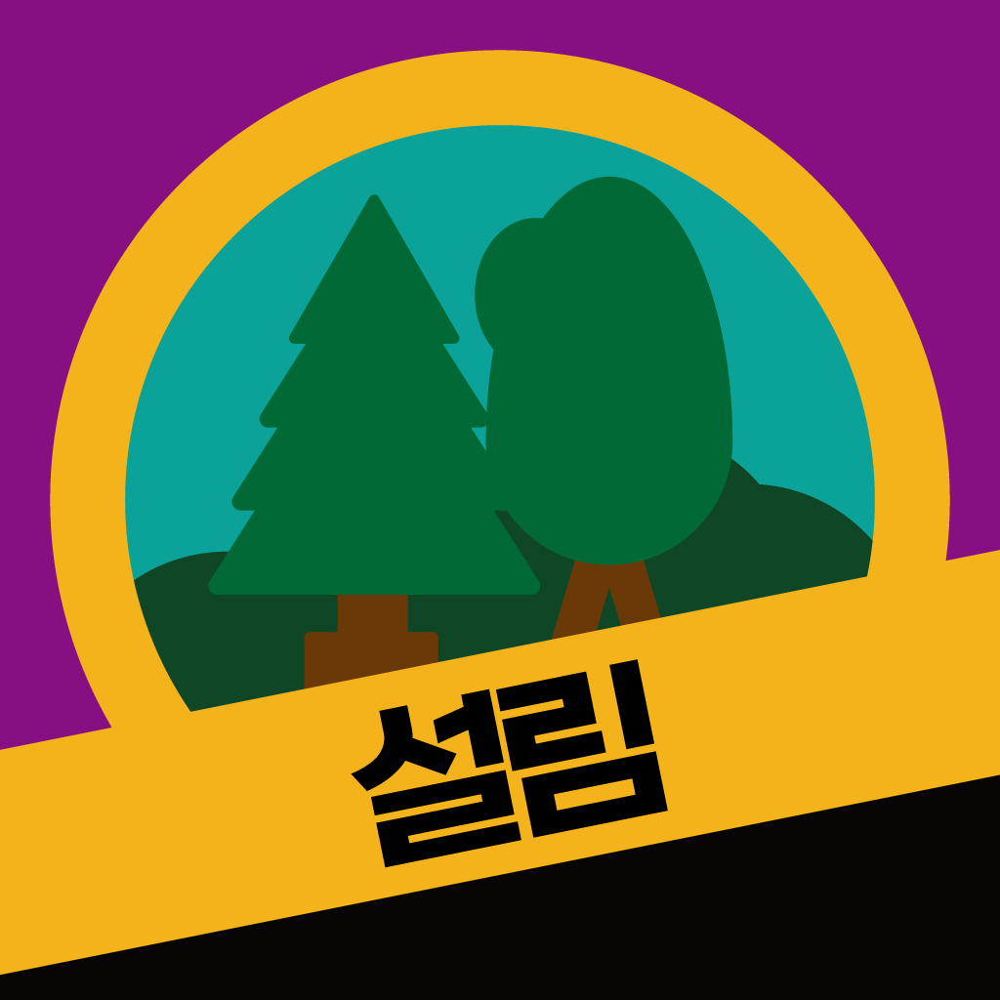
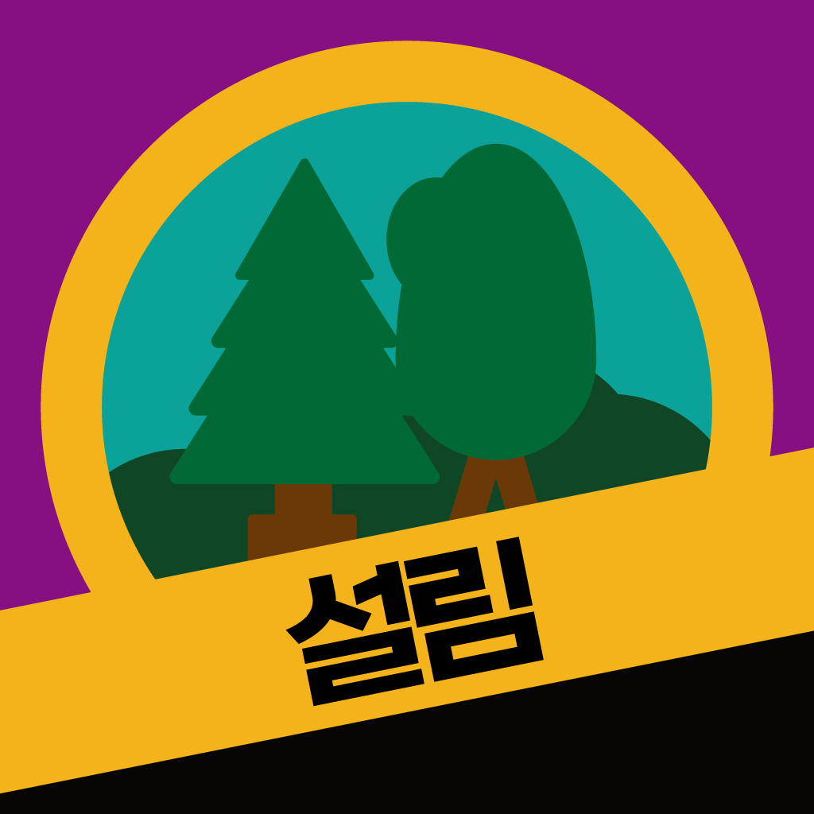
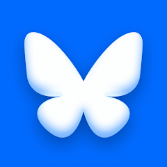
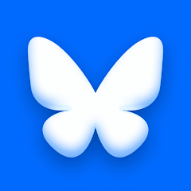

다코🐰
ABOUT ME
언어
한국어는 원어민으로서 사용해요!영어는 듣고 읽을 수는 있지만 작문하기를 어려워해요!
일본어는 학습 중이고, N3정도 수준이예요!
한문은 표점과 함께한다면 어느정도 읽어요!
성적 지향성과 정체성
트랜스여성🏳️⚧️이예요!범성로맨틱 여성애자예요!
다자연애보다는 양자연애를 선호해요!
성격
MBTI는 INTP-T로, 논리학자 유형이예요!애니어그램은 9w8 sp로, 중재자형이예요!
IQ는 표준편차 15 기준으로 129예요!
신체
키는 171cm이예요!체중은 61kg이예요!
BWH는 34"-27"-38"입니다!
소속
설림: 한국인공어연합에서 관리자를 맡고 있어요!좋아하는 것
강아지🐕를 10년간 키워 본 적이 있고, 토끼🐇를 좋아해요!도시학과 언어학, 컴퓨터공학, 화학에 흥미가 있어요!
인도식 커리와 난이 최애 음식이예요!
싫어하는 것
권위주의와 권위적인 집단을 싫어해요!정보
2007년 2월 18일 11시 36분에 태어났어요!경기도 하남시 주민이예요!
SYMBOL
캐릭터
제 오너 캐릭터는 인터넷에서 저를 표현할 때 쓰여요!긴 검은 생머리에 녹색 눈을 가지고 있어요!
현실과 비슷하게 후드와 주름치마를 자주 입어요!
대표색
루시코와 초록:#3A7541루시메즈 베이지:
#EABF8C루시미스 코랄:
#ED7457
좌우명
자유에 감사하고, 꿈꾸며 지켜내자.WORKS
세계관
가상세계관 꿈의도시연방의 루시코와를 만들고 있어요!인공어 로포나와 레미에스어를 만들어요!
가상도시 녹산(슬레)시를 만들어요!
CONTACT
 이메일
디스코드

커뮤니티
이메일
디스코드

커뮤니티
 개인서버
트위터

블루스카이
인스타그램
개인서버
트위터

블루스카이
인스타그램
 유튜브
유튜브
 깃허브
깃허브